Eclipse에서 Spring 프로젝트 시작하기
Spring 환경설정을 다 했다면 이제 Spring 프로젝트를 만들 수 있다.
1 | Project Explorer 빈 공간에서 우클릭 > New > Other or File > New > Other |
이러면 새로운 프로젝트나 파일을 생성할 수 있는 Wizard가 뿅 나타난다. 하단 트리메뉴에서 Spring을 찾아서 Spring Project를 선택한다. (상단 필터에 Spring이라고 입력하면 더 쉽게 찾을 수 있다.)
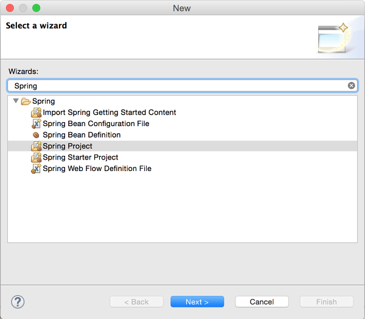
Spring Project 선택한 후 [Next >] 버튼 클릭. Project name을 원하는대로 입력하고, 하단 Templates에서 Spring MVC Project를 선택. 그리고 [Next >]
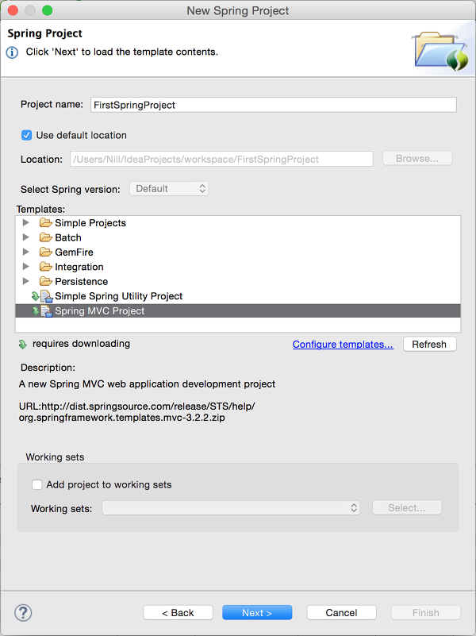
그러면 그림과 같이 top-level package를 정하라고 한다. 적당히 입력해주면 된다. com.mycompany.myapp 도 괜찮고… 여기서 입력한 package가 지금 만드는 Spring MVC 프로젝트의 기본 package(?)가 된다고 보면 된다.
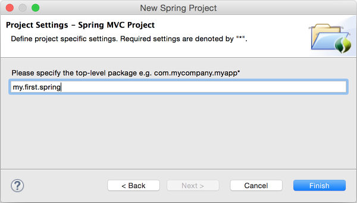
그리고 [Finish] 클릭!
자, 그러면 프로젝트는 생성이 되는데, 막 빨간불(에러)이 뿅뿅 뜬다. 여기서 Maven설정이 잘 되어 있다면 이번엔 Maven이 막 일하기 시작한다. 빨간불이 뜨는 이유는 dependency가 걸려있는 jar파일들이 없어서 그런건데, Maven이 알아서 이 jar파일들을 받아온다. 알아서 안 받아오면
1 | 프로젝트 우클릭 > Run As > Maven Install |
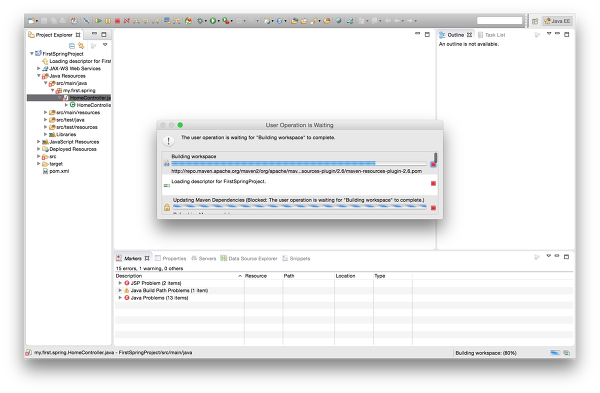
Maven이 일을 다 하면 빨간불이 사라진다! 그럼 이제 서버에 띄워봐야지 ~.~
1 | 프로젝트 우클릭 > Run As > Run on Server |
여기서 화면이 조금 다를 수 있는데, 만약 환경설정 하면서 Server를 설정해줬다면 Choose an existing server가 기본으로 선택된 상태로 추가했던 서버가 아래 목록에 나올 것이고, 아니라면 Manually define a new server가 선택된 상태로 나온다. 여기서 바로 서버 설정을 하면 된다.
기존에 설정한 테스트 서버가 존재할 때
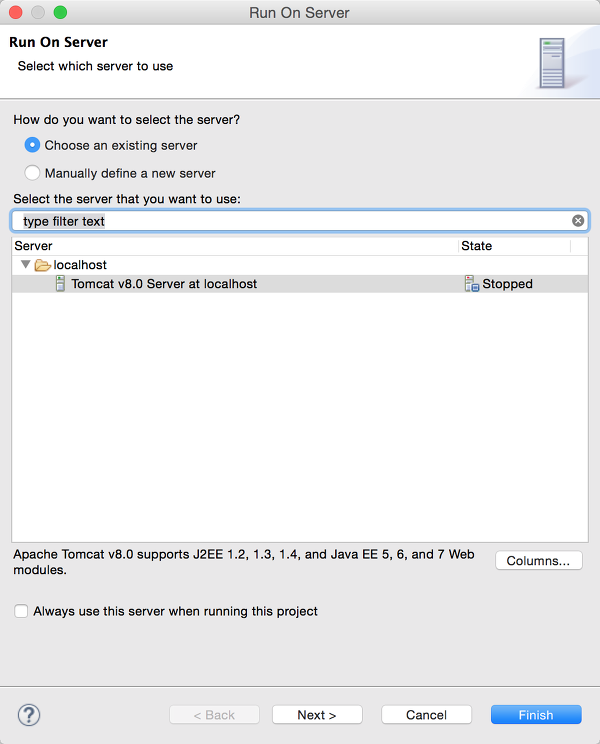기존에 설정한 테스트 서버가 없을 때. 이때는 그냥 원하는 서버 선택 후 [Next >] 버튼 클릭하면 해당 서버가 추가되면서 추가된 서버에 바로 프로젝트가 들어가고, 서버가 자동으로 실행된다.
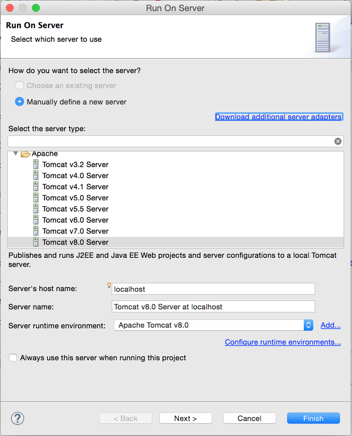
어느 쪽이든 여기서 [Next >] 버튼 클릭하면 아래와 같은 화면이 나옴. 현재 설정 서버로 돌릴 수 있는 프로젝트가 왼쪽에 나온다. 여기서 이 서버로 실행하길 원하는 프로젝트를 오른쪽으로 옮긴(Add 버튼 이용) 다음에 [Finish]
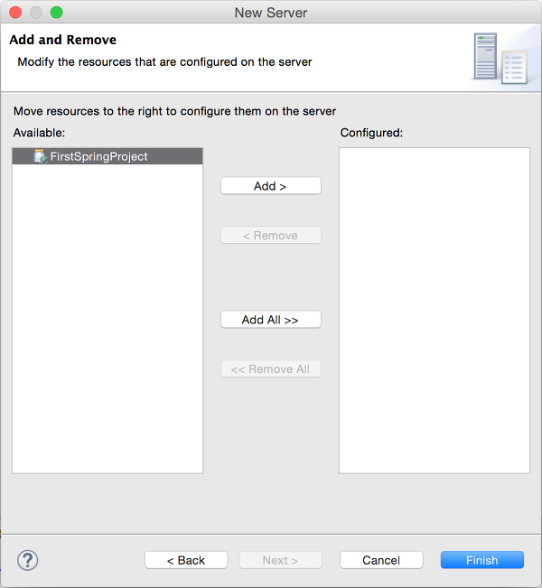
그러면 요렇게 서버 밑에 프로젝트가 뿅! 들어가게 되지!
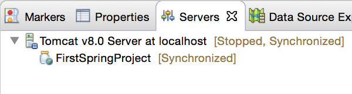
그리고 실행되면서 이렇게 이클립스 내장 브라우저에 실행화면이 나타난다!
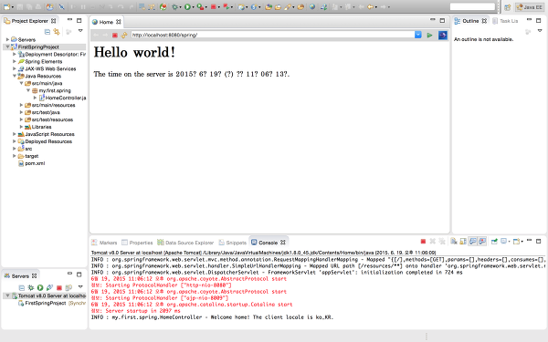
그런데 뭔가 화면이 이상하다… 저기 분명 서버 시간이 나타나는 것 같은데 저 이상한 물음표는 뭐지…..?
화면 인코딩이 맞지 않아서 저렇게 나오는 것!
home.jsp 파일을 열어보면 아래와 같이 되어 있을텐데
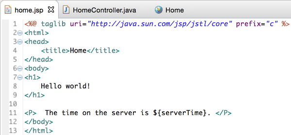
아래 그림처럼 2번째 줄에 이 문장을 추가해준다.1
<%@ page contentType="text/html; charset=utf-8" pageEncoding="utf-8" %>
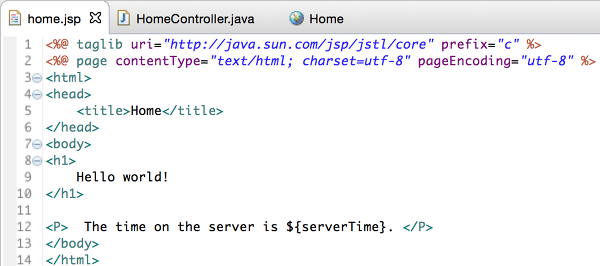
그리고 다시 띄워보면? 한글이 제대로 나온다! 정말 완성!
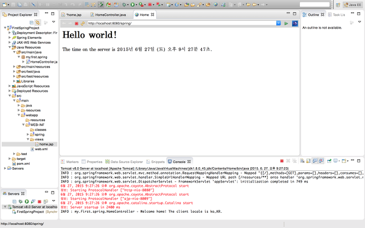